디자인 시스템부터 세워요
영상은 25가지 요령을 쉬운 것, 중간, 고급 세 단계로 나눠 소개해요. 첫 단계의 출발점은 디자인 시스템이에요. Claude뿐 아니라 어떤 AI 에이전트로 디자인을 하든, 색과 글꼴과 컴포넌트 규칙이 먼저 있어야 결과물이 한 브랜드처럼 보여요.
1. 디자인 시스템 만들기
claude.ai/design에서 Design systems로 들어가 Create를 누르면 돼요. 사업 설명을 적고 폰트·로고·자산을 올려요. 꼭 처음부터 쓸 필요는 없어요. 마음에 드는 덱이나 웹사이트, 스크린샷 한 장만 넣어도 Claude가 거기서 색·폰트·컴포넌트를 뽑아내요.
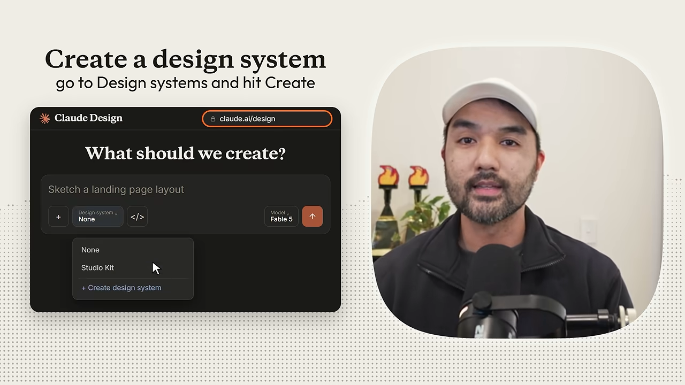
2~3. 남이 만든 시스템을 빌려 오기
참고할 게 없다면 styles.refero.design을 열어 봐요. Mercury, Linear, Apple 같은 실제 서비스의 디자인 시스템 2,000여 개가 모여 있어요. 색·글꼴·간격이 Claude가 읽기 좋은 문서(DESIGN.md)로 정리돼 있어서, 하나를 복사해 붙이고 고칠 점만 말하면 한 번에 좋은 시스템이 나와요.
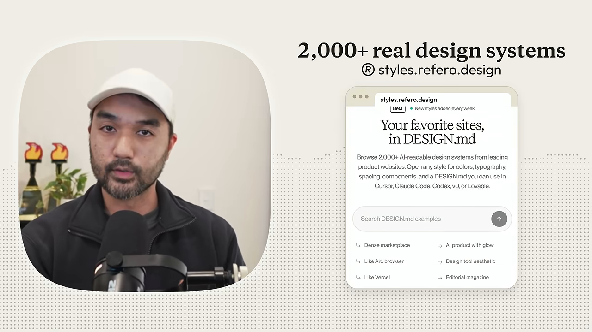
수천 개를 직접 넘겨 볼 필요도 없어요. 갤러리 링크를 주고 '우리 사업에 가장 가까운 디자인 시스템 세 개를 찾아서 링크를 달라'고 하면 Claude가 내 분야에 맞게 추려 줘요. 이 갤러리뿐 아니라 웹에서 찾은 어떤 갤러리에도 통하는 방법이에요.
4. Claude Code에서는 스킬로
Claude Design 웹앱은 좋지만 웹 기반이라 내 컴퓨터 파일을 하나씩 올려야 해요. Claude Code나 Cowork를 쓴다면 디자인 시스템을 커스텀 스킬 하나로 만들면 끝이에요. 영상에서는 /duolingo 스킬을 만들어, 부를 때마다 듀오링고 스타일로 화면을 만들게 했어요. 발표자는 이 영상의 다른 요령도 대부분 Claude Code에서 그대로 통한다고 해요.
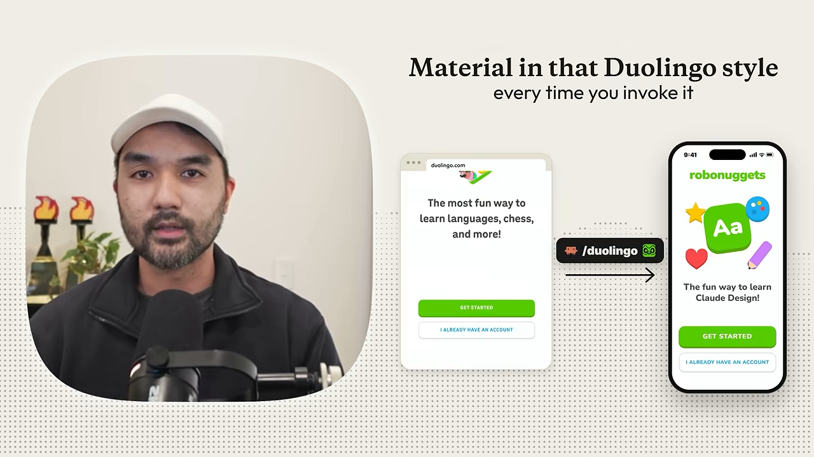
폰트·카피·조합으로 AI 티 지우기
5. 폰트를 직접 고르기
바이브 코딩으로 만든 디자인을 가장 빨리 알아보는 단서가 폰트예요. 초보자는 Claude가 준 기본 폰트를 그대로 두거든요. 발표자는 무료 폰트 사이트인 Fontshare나 Fontesk에서 브랜드에 맞는 폰트를 고르라고 해요. 제목과 본문 조합이 필요하면 Fontjoy가 짝을 자동으로 만들어 줘요.
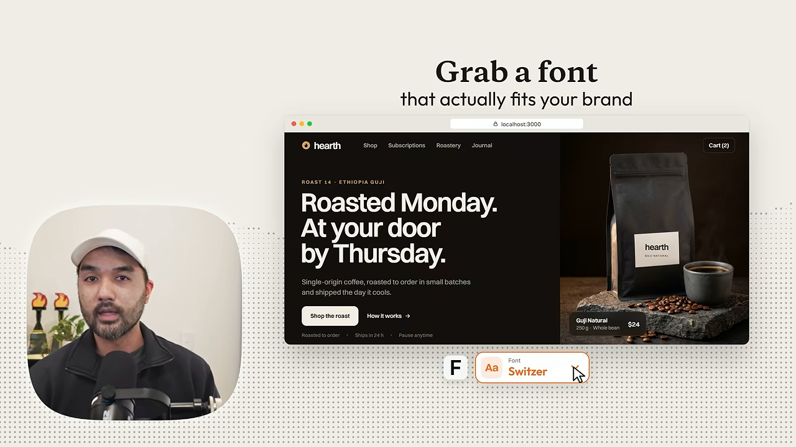
고른 폰트는 프롬프트에 이름을 적거나(예: 'Switzer를 제목과 본문에 써 줘'), 폰트 파일을 디자인 시스템에 올리면 돼요.
6. 카피에서 AI 말투 빼기
화면이 완벽해도 문구가 AI가 쓴 것처럼 들리면 독자는 이미 떠나요. 그래서 Claude에게 내 분야 상위 5곳을 조사해 카피의 공통 패턴을 찾고, 그걸 디자인 시스템에 넣으라고 해요. AI 말투가 아니라 모범 사례에서 출발하는 셈이에요.
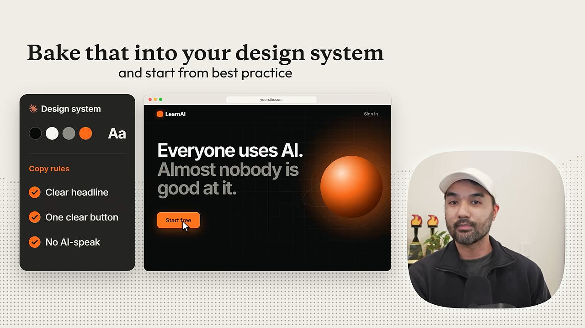
7. 디자인 시스템 섞기
나만의 디자인을 만드는 한 가지 방법은 여러 시스템을 섞는 거예요. 작업 중인 시스템에 다른 시스템들을 함께 붙이고, 어느 쪽에서 무엇을 가져올지 정해 줘요. 예를 들어 글꼴은 1번에서, 색과 모션은 2번에서 가져오라고 하면 Claude가 합쳐요. 좋아하는 브랜드를 그대로 베낀 결과가 아니라 내 것처럼 보이는 조합이 나와요.
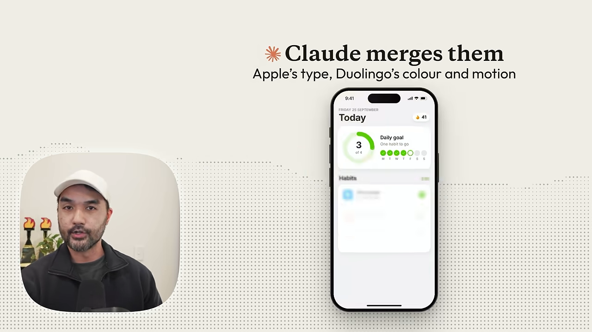
발표자는 여기까지만 해도 Claude와 AI 에이전트로 디자인하는 사람 대부분보다 앞서 있다고 말해요.
이미지·레퍼런스·마감 스킬
중간 단계부터는 프런트엔드 디자인과 마케팅 자료를 더 전문가답게 다듬는 요령이에요.
8. 이미지·영상 생성기 연결하기
Claude Design은 이미지나 영상을 스스로 만들지 못해요. 대신 생성 서비스에 연결할 수 있어요. 발표자는 주요 이미지·영상 모델을 한곳에서 쓰고 생성한 만큼만 돈을 내는 Kie AI를 써요. 연결도 직접 하지 않아요. API 키 위치를 알려 주는 프롬프트를 Claude Code에 보내 설정을 맡겨요.
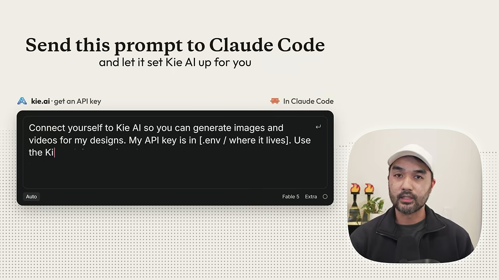
9. 이전 프로젝트를 출발점으로
새 작업을 시작할 때 이미 끝낸 Claude Design 프로젝트 URL을 붙여 넣고 '이 프로젝트의 디자인 시스템과 자산을 써 줘'라고 해요. Claude Code에서도 이전 세션 이름을 주거나 Claude에게 찾아 달라고 하면, 해 둔 작업이 새 작업의 출발점이 돼요.
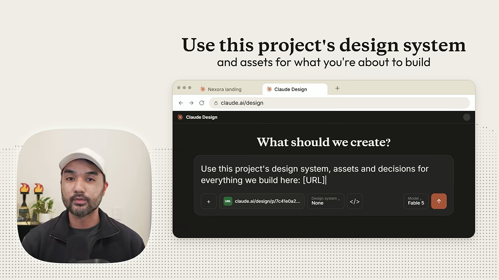
10. 레퍼런스 라이브러리 만들기
발표자는 좋은 디자인을 많이 볼수록 안목이 는다고 봐요. 그래서 Dribbble, Awwwards, X처럼 마음에 드는 디자인이 보이는 곳에서 꾸준히 모아 두라고 해요. 본인은 클릭 한 번에 지금 페이지의 스크린샷과 메모를 저장하는 크롬 확장 프로그램을 직접 만들어 써요. 모아 둔 자료는 영감을 얻을 때도 보고, 다음 작업 때 Claude에게 참고로 넘기기도 해요.
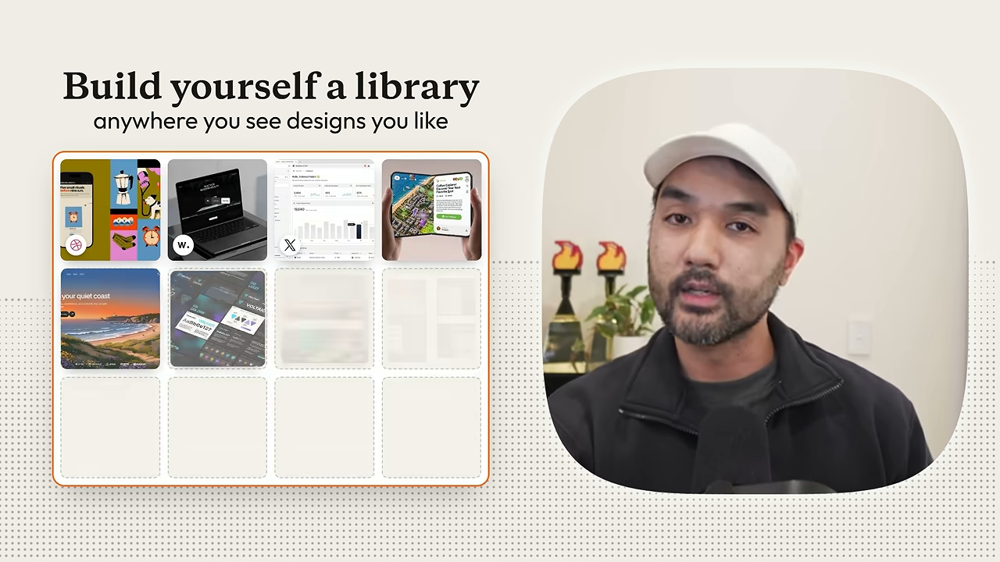
11~12. 마감용 스킬 두 개
Impeccable은 웹사이트에서 AI 티를 걷어내 준다는 명령 묶음을 가진 디자인 스킬이에요. 돌리면 위계, 간격, 글꼴, 접근성, 빈 상태까지 점검하고 고쳐요. 괜찮은 초안을 전문가 수준으로 다듬는 데 좋다고 해요.
다른 하나는 tone of voice 스킬이에요. 금지어 목록, 내가 말하는 방식, 자주 쓰는 표현을 담아 Claude와 함께 만들어요. 이미 나와 있는 글쓰기 규칙을 넣어도 돼요. 발표자가 예로 든 건 ASD-STE100 간결한 기술 영어 표준, Google 개발자 문서 스타일 가이드, Apple의 글쓰기 스타일이에요.
가져다 쓰는 컴포넌트·아이콘 자료실
이 구간은 Claude에게 그대로 넘길 수 있는 무료 자료실 소개예요. 공통된 요점은 하나예요. 컴포넌트나 아이콘을 처음부터 그리게 하지 말고, 검증된 걸 가져다 주는 편이 결과도 좋고 토큰도 아껴요.
| 번호 | 자료실 | 무엇이 있나요 | 쓰는 법 |
|---|---|---|---|
| 13 | 21st.dev | 오픈소스 커뮤니티가 공유한 UI 컴포넌트 | 복사해 붙이고 '이 컴포넌트를 써 줘'라고 해요 |
| 14 | React Bits | 애니메이션 텍스트, 유리 카드, 커서 효과 | 코드를 복사해 프런트엔드에 넣거나 디자인 시스템에 저장해요 |
| 15 | Canvas UI | 액체·유리·깨짐·파티클 효과 35가지 | 눈에 띄는 화면이 필요할 때 무료로 써요 |
| 16 | Iconify · Flaticon | 아이콘 팩 | 한 스타일의 팩을 통째로 받아 폴더째 넘겨요 |
| 18 | Lordicon | 애니메이션 아이콘, 수천 개 무료 | Lottie 파일로 받아 Claude에 넣어요 |
| 19 | Creators Toolbox | 무료 디자인 자료 150여 개 모음 | resources 섹션을 북마크해 둬요 |
13~15. 컴포넌트와 이펙트
21st.dev의 컴포넌트는 처음부터 에이전트에게 넘기기 좋게 만들어져 있어요. 하나를 골라 붙이면 Claude가 처음부터 디자인하는 대신 검증된 섹션을 페이지에 넣어요.
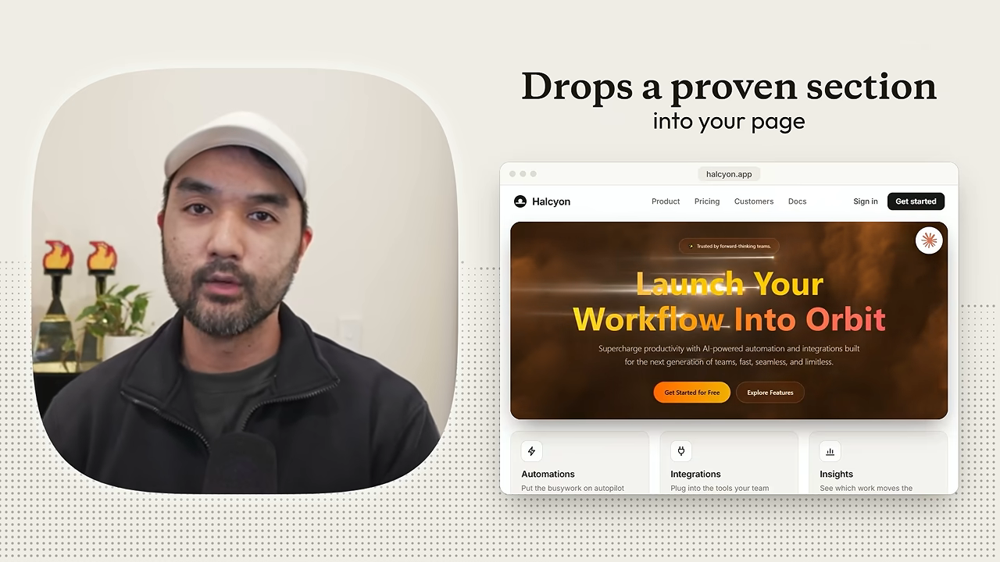
React Bits는 같은 발상이지만 좀 더 과감한 컴포넌트가 많아요. 고급 사이트에서 보던 움직이는 글자나 커서 효과 같은 것들이에요. Canvas UI는 더 독특한 효과로 눈에 띄고 싶을 때 쓰는 무료 자료예요.
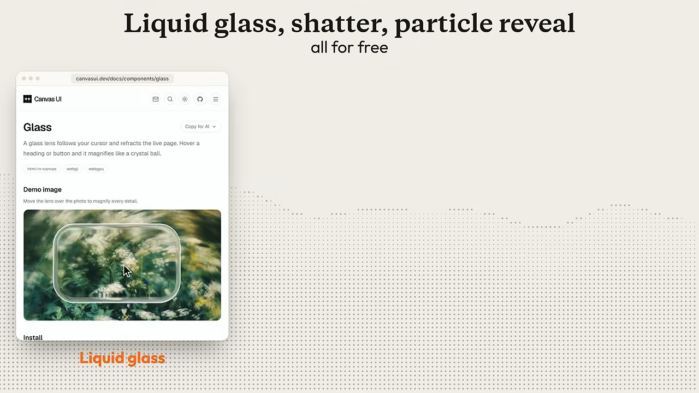
16~18. 아이콘은 받아 오고, 새로 그릴 땐 SVG로
Claude는 아이콘을 잘 못 그리는 편이에요. 그래서 Iconify나 Flaticon에서 한 가지 스타일로 된 팩을 통째로 받아 넘겨요. 아이콘을 바로 쓸 수 있을 뿐 아니라, 나중에 같은 스타일로 새 아이콘을 만들 때 좋은 참고 자료도 돼요.
새 아이콘·일러스트·다이어그램을 그리게 할 때는 SVG로 달라고 해요. 크기를 아무리 키워도 흐려지지 않아요. 파일을 열어 색을 손으로 고칠 수 있고, Claude에게 애니메이션을 붙여 달라고 할 수도 있어요.
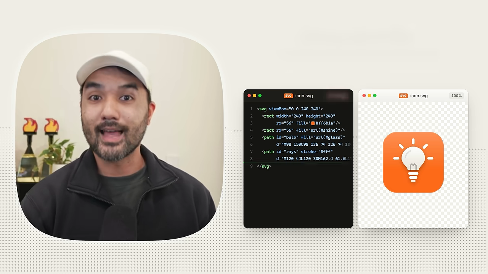
Lordicon은 애니메이션 아이콘 라이브러리예요. 마음에 드는 걸 Lottie 파일로 받아 넣으면 돼요. 애니메이션이 이미 들어 있어서, 발표자는 일반 SVG 아이콘의 업그레이드판이라고 표현해요.
19. 하나만 북마크한다면
발표자가 이 영상에서 하나만 북마크하라면 고르는 곳이 Creators Toolbox의 resources 섹션이에요. 애니메이션 컴포넌트, Three.js 효과, SVG 아이콘, 로고 갤러리, 목업 키트까지 무료 자료 150여 개가 모여 있어요. 앞에서 소개한 Refero Styles도 여기 들어 있어요.
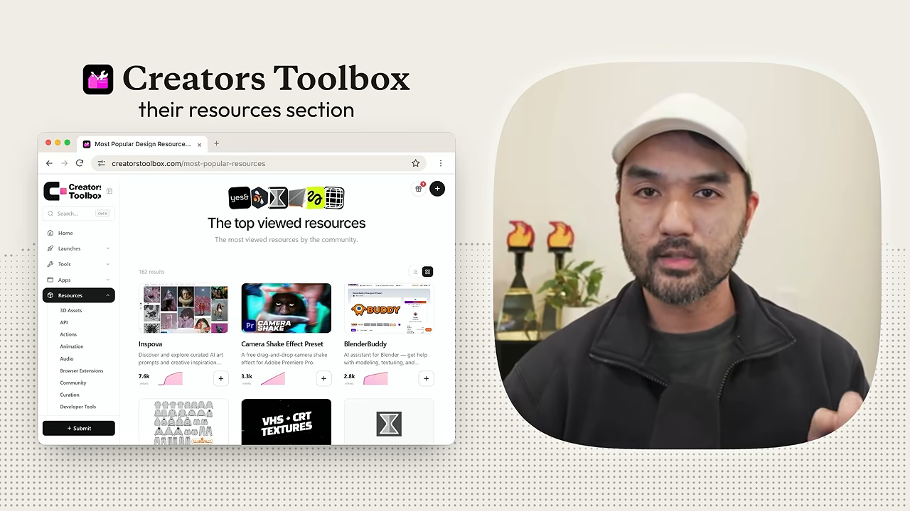
고급: 규칙·모션·Claude Code 흐름
고급 단계는 규칙을 스킬로 만들고, 모션을 넣고, Claude Code 안에서 작업 흐름을 묶는 요령이에요.
20. Apple HIG를 스킬로
Apple은 Human Interface Guidelines를 무료로 공개해요. 레이아웃, 글자 크기, 터치 영역, 색에 대한 Apple의 규칙집이에요. 이걸 스킬로 만들어 두면 앱 화면이나 UI를 설계할 때 Claude가 추측하지 않고 Apple 규칙을 따라요.
21. 모션은 GSAP으로
사이트의 움직임과 상호작용을 최고 수준으로 만들고 싶다면 Claude에게 GSAP을 쓰라고 지시해요. 빠르고 안정적인 자바스크립트 애니메이션 라이브러리이고, 유명 에이전시들이 많이 써요. 스크롤에 맞춰 움직이는 섹션이나 보는 순간 드러나는 글자 효과를 맡길 수 있어요.
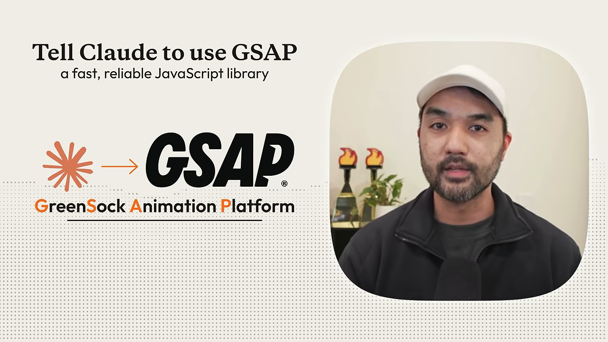
22~23. Claude Code의 /design과 tweak 스킬
Claude Code에는 공식 /design 명령이 있다고 해요. 아이디어나 스크린샷을 주면 Figma처럼 편집할 수 있는 아트보드 캔버스가 열려요. 차이는 Claude Code라서 워크스페이스 전체와 규칙, 메모리를 이미 안다는 점이에요. 그래서 고칠 때마다 내가 원하는 것과 싫어하는 것을 다시 설명하지 않아도 돼요.
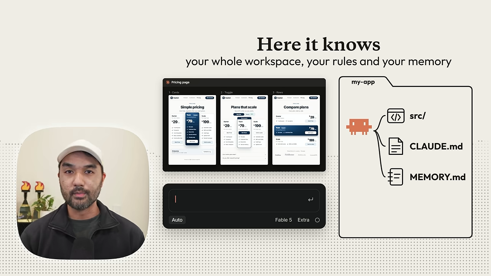
Claude Design에는 Tweaks 패널이 기본으로 있어요. 글꼴, 간격, 색 같은 값을 슬라이더로 손으로 조정하는 패널이에요. Claude Code에서는 비슷한 tweak 스킬을 직접 만들면 돼요. 어떤 HTML 페이지에든 슬라이더 패널을 붙여 다듬고 필요 없는 부분은 숨겨요. 다 끝나면 정한 값을 디자인 코드에 반영해요.
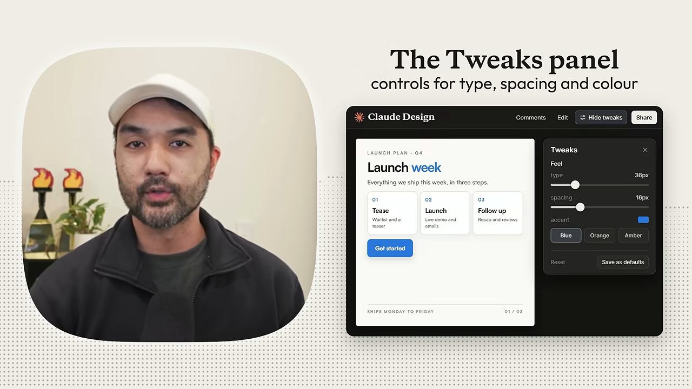
24. 대본으로 모션 그래픽 만들기
발표자가 이 영상의 애니메이션을 만든 방법이에요. 먼저 무료 도구 Whisper로 방금 찍은 영상의 단어 단위 타임스탬프 대본을 뽑아요. 그다음 Claude에게 애니메이션이 도움이 될 순간을 찾게 해요. Claude는 HyperFrames라는 도구로 그 순간에 맞춘 클립을 만들어 돌려줘요. 이미 탄탄한 디자인 시스템이 있다면 함께 쓰라고 해요. 그래야 결과물이 바이브 코딩한 AI 디자인처럼 보이지 않아요.
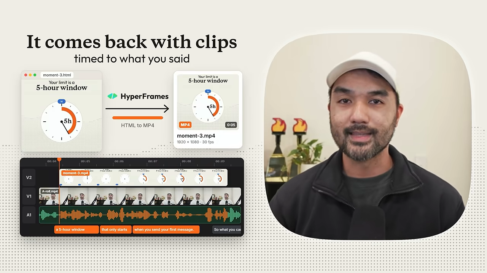
25. 나만의 디자인 OS
마지막은 앞의 모든 요령을 한데 묶는 거예요. Claude에게 작은 앱을 만들게 해서, 완성한 디자인과 생성한 이미지·영상을 전부 색인해 둬요. 그러면 시각 스타일과 레퍼런스를 나도 쉽게 찾고 Claude도 꺼내 쓸 수 있어요. 형태는 사람마다 달라요. 발표자 팀은 브랜드에 맞는 3D 자산, 모션 애니메이션, SVG 아이콘을 재사용하는 요소 라이브러리를 만들어 써요.
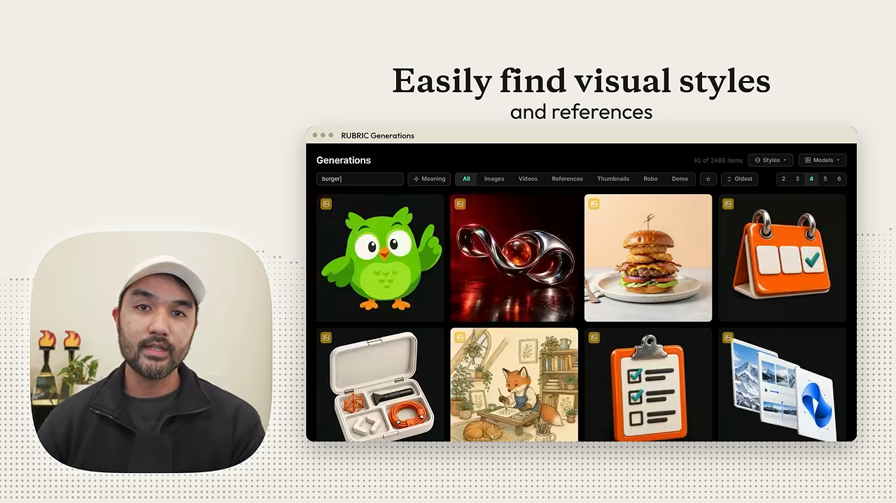
| 번호 | 요령 | 어디서 |
|---|---|---|
| 20 | Apple HIG를 스킬로 | Claude Code · 스킬 |
| 21 | GSAP으로 모션 | 프롬프트 지시 |
| 22 | /design 명령 | Claude Code |
| 23 | tweak 스킬 | Claude Code (Claude Design에는 Tweaks 패널 내장) |
| 24 | 대본 → 모션 그래픽 | Whisper + Claude + HyperFrames |
| 25 | 디자인 OS | Claude가 만든 자체 앱 |